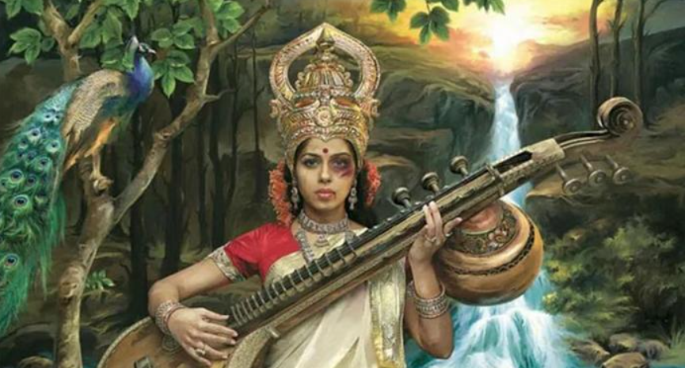
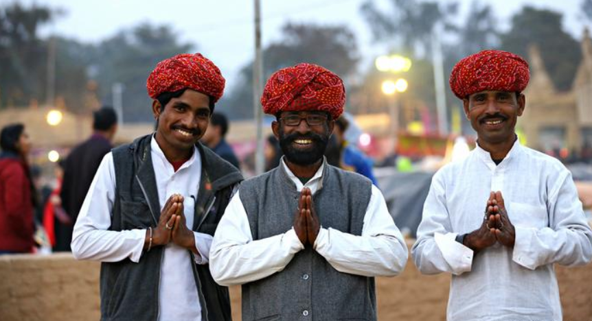

and heritage, making it one of the oldest in the world.
1. Land of the 'Hindus'
The name "India" is derived from the River Indus, around which the Indus Valley civilization flourished over 5,000 years ago. The native worshippers referred to the river as Sindhu. Persian invaders changed it to Hindu. The name "Hindustan," often used to refer to India, combines Sindhu and Hindu and refers to the land of the Hindus. However, in the Hindi language, the country is called "Bharat."
2. Diverse religions
India is the birthplace of four major religions, including Hinduism and Buddhism. While about 84% of the country identifies as Hindu, it is also the home to one of the largest Muslim populations in the world. Jews and Christians have also lived in India since 200 B.C. and 52 A.D. respectively. However, religious minorities are increasingly feeling insecure amid the rise of Hindu nationalism.
3. Woman as 'Devi'
Hindus have traditionally placed women on a high pedestal, even revering them as goddesses. But treatment of girls and women in today's India has been anything but respectful. The country is considered one of the most dangerous for women, with a woman raped every 20 minutes, according to government data. The practice of dowry and female infanticide are still widely prevalent.
4. Holy cow!

The cow is sacred for India's Hindus, who make up more than 80% of the nation's population, but they do not consider it to be God. In Hindu mythology, the animal is related to several deities, like Krishna, the cowherd god — or Shiva, who rides his bull, Nandi. It also makes economic sense for the poor to use various cow products — milk, curd, butter, ghee, urine, dung — rather than just meat.
5. Vegetarian nation?
However, it's a myth that India is a largely vegetarian country. While government surveys and various estimates suggest that more than a third of Indians do not eat meat, some experts believe that the "cultural and political pressures" cause many Indians to underreport meat consumption — particularly beef — and overreport vegetarian diets. The actual number of vegetarians is likely much lower.